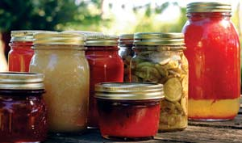

21St Century Homesteading: Why Grow Your Own Food?
Local and homegrown food is a satisfying, secure and healthful alternative to the conventional American diet.
By Harvey Ussery
February/March 2007
In his book What are People For?, Wendell Berry wrote “Eating with the fullest pleasure - pleasure, that is, that does not depend on ignorance - is perhaps the profoundest enactment of our connection with the world. In this pleasure we experience and celebrate our dependence and our gratitude, for we are living from mystery, from creatures we did not make and powers we cannot comprehend.”
Many people think that the American food supply is the best in the world - the most abundant and the safest, featuring the lowest cost and the greatest convenience, the widest choice and the highest nutritional value. So why are so many of us going to the trouble of growing our own food, or seeking it from known producers close to home?
For my wife, Ellen, and me, the answer is simple. We think the food we grow ourselves or buy from local farmers is far superior in taste and nutrition to the food found in most grocery stores. I estimate that 85 percent of the food we eat is either grown in our own back yard, or purchased face-to-face from local farmers we know personally.
We are fortunate to have enough land for a large garden, but even if you don’t live in the country, you can enjoy the flavor and nutrition of homegrown produce. Many urban dwellers have the opportunity to grow a small portion of their food in community gardens or patio pots - a tomato plant or two, some herbs, lettuces and scallions. Most can also find farmers markets where the vendors sell what they grow. In the suburbs, many people have space for real gardens. With planning and careful management, even small gardens can be amazingly productive. And those who live in the country have maximum opportunity to do as we do: create a productive homestead that provides an increasing amount of the family’s food with each passing season, and to seek out like-minded local producers who can supply those foods we are unable to produce ourselves.
To understand what’s so worthwhile about homegrown food, it’s helpful to take a closer look at what’s amiss in conventional large-scale food production.
Concerns about food safety. Although we live in an era of ultrapasteurization and high-tech processing, food-borne illness is common in this country. According to the Centers for Disease Control and Prevention, every year an estimated 76 million cases of food-borne illness - including 325,000 hospitalizations and 5,000 associated deaths - occur in the United States. That’s more than a quarter of the population suffering from food-borne illnesses each year.
Concerns about food quality. It’s hard to believe there are people who - having the choice between meals prepared “from scratch” with basic ingredients, or prepackaged or franchise fare - would prefer the latter. But there are. Ellen and I once gave one of our roasting chickens to an elderly neighbor. “Oh, my!” she later assured us, “that was chicken like we used to eat when I was growing up.” But when we offered her another, she sadly declined: “No, my family didn’t like it - too much flavor.”
Perhaps an interesting experiment for many people would be the following: For six weeks, eat anything you like - so long as it has been made from whole, unprocessed primary ingredients, and has been prepared by your own hands. Whatever your tastes at the moment, at the end of the six weeks I predict you will have a wholly different notion about what you’re looking for on your plate.
But when I think of food quality, I think not only of gustatory pleasures, but of food’s nutritional value. Judged by that standard, there is no question that the conventional American diet gets a failing grade. The U.S. Department of Agriculture’s own figures indicate that the nutrients in the American food supply have been declining for decades. Many factors are at fault, from the declining levels of minerals in our soils because of our agricultural practices (more mining operation than farming) to the enormous distances we move our foods (an average of 1,500 miles from field to table), necessitating harvest before peak ripeness and peak nutritional content.
The picture gets worse when we consider processed foods. The truth is, many of the products in the supermarket today are concoctions from a narrow base of commodity ingredients that are not the nutritional equivalents of the traditional foods they replace.
Consider this food, for example, which is made up of 98 percent “water, corn syrup, hydrogenated vegetable oil and high fructose corn syrup.” (The remaining 2 percent is the usual list of additives neither you nor I have ever heard of.) Now, pop quiz: What is this food, and what is its nutritional content?
Surely none of us would guess that this food is meant to be a replacement for whipped cream (yes, it’s Cool Whip), since none of its major ingredients ever saw the inside of a cow. And there’s no nutrition in this food other than raw calories to burn in our cells, or convert to fat. That’s in marked contrast to real cream, which is rich in fat-soluble vitamins, enzymes and the high-quality fats needed to make and maintain our cell walls, especially those in our brains and nervous systems.
Lack of ingredient choices. Nothing would seem to characterize our food system more than abundant choice. More and more, we can have what we want to eat at any hour of the day or night, in any preferred flavor - Italian, Mexican or Chinese. But if my Cordon Bleu Chicken Supreme and my Thai Chicken Noodle Delight are largely (aside from the meat) the same blend of highly processed ingredients, have I really made any meaningful choice in how I nourish my body - as opposed to how I tickle my tastebuds?
Even if I eschew highly processed foods, I may be shocked to learn how limited my food choices truly are. For example, do you know any consumer who would knowingly purchase chicken for his or her family’s dinner that had been soaked in water contaminated with fecal matter? Surely not, yet that is in fact part of the history of almost all supermarket and fast-food chicken. Nervous about genetically modified crops? Not only are these ingredients ubiquitous in our food, but you’re on your own in determining which foods contain GMOs, because the FDA decided that food labels don’t need to divulge this information. Ditto for synthetic recombinant bovine growth hormone (rBGH), used to boost milk production in most large commercial dairy herds. You may conclude, based on reliable research, that rBGH is an unsafe addition to milk, but the FDA has ruled that you need not be advised of its presence in the milk you buy.
Ignoring the true costs of food. Americans spend, on average, a smaller percentage of our income on food than any other national population. The cheap food that our government has pushed so hard to achieve, however, is cheap only insofar as we ignore some of the true costs involved; costs such as the pollution of groundwater by runoff from giant feedlots and excessive use of synthetic nitrogen fertilizers; and the heavy use of antibiotics in high-confinement feeding operations that eventually makes those antibiotics less effective. In a rational accounting system, these costs would be added to the price of fast-food hamburgers and the like.
The hidden costs of industrial food are being charged against the future as well as the present. In our cheap food system, we lose soil 10 times faster than it is being replenished. According to a recent study from Cornell University, around the world, cropland the size of Indiana is lost each year to erosion. In addition to the washing and blowing away of overtilled, chemicalized soil, one of the most critical forms of topsoil loss is the oxidation of humus in the soil - that is, the binding of the carbon in humus with the excess oxygen to which it is exposed, resulting in release of CO2 to the atmosphere.
The burning of fossil fuels is the major culprit in global climate change, but the massive release of CO2 into the atmosphere as a result of industrialized agriculture is another major, and growing, contributor. Furthermore, there’s no doubt that the way we eat has a great deal to do with the epidemic rates of disease we are suffering. Especially disturbing is the growing incidence among children of diet-related diseases, including what used to be called “adult-onset diabetes,” as well as skyrocketing rates of obesity in both children and adults, which in turn increase the risk of hypertension, coronary heart disease and several types of cancer. The hidden costs of our “cheap” food can be very high indeed.
The high price of convenience. The one undisputed virtue of industrial food is its convenience. Today we are free not only from the effort and insecurity inherent in hunting, gathering or growing our own food, but also from the task of preparing it. But this convenience comes with a price: with it we experience a lack of awareness unprecedented in history. We don’t understand the nature of our food. We don’t know where it comes from, or the work required to grow it. We don’t realize that our abundant food supply depends on the availability of cheap fuels that might suddenly become much more expensive. Few of us understand what constitutes quality in food, and finally we miss many of the deep pleasures available through eating - and sharing with others - simple, wholesome and satisfying foods.
To return to the writing of Wendell Berry, I also agree with him when he says, “Eaters ... understand that eating takes place inescapably in the world, that it is inescapably an agricultural act, and how we eat determines, to a considerable extent, how the world is used.”
The advantages of producing our own food, or purchasing it from known local sources, exactly counter the disadvantages and flaws of the industrial food system:
Safe food. When we produce our own food, we know it is safe. When we buy our food face-to-face from local farmers, we have the opportunity to talk with them and ask questions. No longer does the safety of our food depend on a totally anonymous system based on minimum-wage, exploited, often uneducated workers.
High-quality food. Producing our own or buying it close to home is a recipe for the best, freshest ingredients possible. One likely result is that our eating will become simpler and more basic - food made from the best of primary ingredients is deeply satisfying and does not require a lot of fancy preparation.
True food choice. By growing food at home, Ellen and I no longer have to accept the options dictated by the industrial food market. We can eat real, traditional foods rather than imitations of them. We avoid the disguised addition of genetically modified ingredients, food flavorings, preservatives, pesticide residues, ultra-refined starches and sugars, etc. We avoid beef, pork and chicken raised and slaughtered under filthy and often inhumane conditions.
Valuing food. Perhaps the biggest surprise for most people who try to opt out of the industrial food system is that their food may not always cost less! Of course, your backyard tomatoes will certainly cost a lot less than the supermarket version, as long as you don’t spend too much on garden supplies. And we find that the lamb and kid we buy on the hoof and pay an abattoir to butcher and process is cheaper than the commercial equivalent, doubtless because of the number of “middle men” who have been cut out of the loop.
But people who think I raise my own chickens as a way to save money are amazed when I tell them my dressed poultry and eggs cost more - much more - than what they buy in the supermarket. I buy certified organic ingredients to make my feeds, and there is no way I can compete with the poultry industry giants.
When it comes to food costs, it is good to remember the old adage: You get what you pay for. I propose that we also remember this: One dollar, one vote. Every dollar we plunk down for food is first and foremost a vote in favor of the way that food was produced.
Secure food. In the Great Depression of the 1930s, there was real hunger in the cities. Many people in the country were devastated financially, but at least they had enough to eat, either because they were used to producing a lot of their own food, or because they had neighbors who could, and with whom they could barter. Now, almost a century later, a serious economic collapse would find vastly more people in cities and suburbs - even many of those still living in rural areas - lacking in the skills and accumulated wisdom necessary to raise their own food.
Sources of food under one’s own control or that of close neighbors would be far more secure in a time of rapid economic change than those in the supermarket. Furthermore, those who have climbed the necessary learning curves and acquired food-production skills will be far better prepared, in terms both of seeing to their own family’s needs, and of being of service to others. The time to prepare for an uncertain future is now, and we can make no more useful preparation than learning how to produce more of our own food.
Surely there has been no society in human history more estranged from the natural world than ours, and we experience that broken relationship in what we eat and the way we eat it: artificial foods bearing little relation to their origin in soil or in living plants and animals; eaten thoughtlessly, on the run.
Modern eating is above all about forgetting - about what it is we are eating, about its origins in living systems. The alternative is to learn to know our food intimately, to care intensely about its quality and its role in our lives, to share it with gratitude and respect.
Whenever we grow our own food, or seek it from local sources, we reconnect with the natural year, the passing of the seasons, the interdependence of all forms of life in the great web. By participating in the creation of our food, from soil to table, we find our way back to food as a sacred gift.
- Now that he has outlined why he and his wife choose to grow most of their own food, Ussery will explain a variety of basic homesteading skills in upcoming issues. For more about Harvey and Ellen, read “Our 21st Century Homestead” in the December/January 2007 issue and visit their Web site.
WALTER CHANDOHA
You can't find fresher vegetables than those that come straight from your garden.
|
MATTHEW T. STALLBAUMER
For the best flavor and nutrition, you can't beat homemade bread made from freshly ground flour.
|
SCOTT VLAUN
'Wonder' orange bell pepper
|
SCOTT VLAUN
'Cobham' parsnips
|

WALTER CHANDOHA
Many vegetables store well all through the winter.
|
SCOTT VLAUN
'Royal Burgundy' bush bean
|

WALTER CHANDOHA
You can enjoy the flavors of summer in any season by learning a few simple food preservation skills.
|
HARVEY USSERY
Fresh eggs from Harvey Ussery's pastured chickens.
|
WALTER CHANDOHA
Freshly picked greens from your yard (or a farmers market) make delicious garden-fresh salads.
|
SCOTT VLAUN
Cabbage
|
SCOTT VLAUN
Butternut Squash
|
|